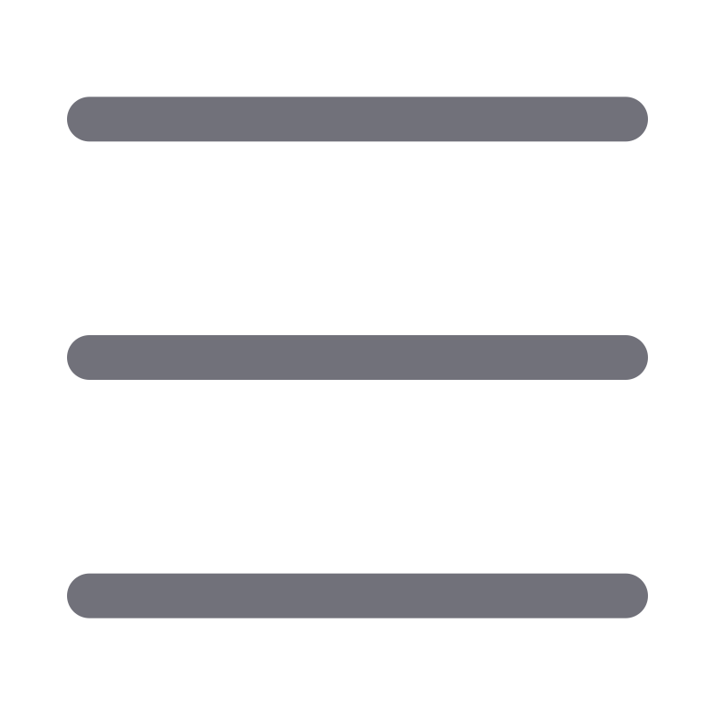

<div>

    <header id="header" class="header fixed-top d-flex align-items-center justify-content-between z-2">
        <div class="d-flex justify-content-start">
           
                
       
        </div>

        <nav class="header-nav">
            <ul class="d-flex align-items-center">


                <li class="nav-item dropdown pe-3">

                    <a class="nav-link nav-profile d-flex align-items-center pe-0" href="#" data-bs-toggle="dropdown">
                        
                        <span class="d-none d-md-block dropdown-toggle ps-2">{{user.nombre}}</span>
                    </a><!-- End Profile Image Icon -->

                    <ul class="dropdown-menu dropdown-menu-end dropdown-menu-arrow profile">
                        <li>
                            <a routerLink="/dashboard" class="dropdown-item d-flex align-items-center" href="#">
                                <i class="bi bi-box-arrow-right"></i>
                                <span >Usuario</span>
                            </a>
                        </li>
                        <li>
                            <a class="dropdown-item d-flex align-items-center" href="#">
                                <i class="bi bi-box-arrow-right"></i>
                                <span (click)="layaut()">Cerrar sesión</span>
                            </a>
                        </li>

                    </ul><!-- End Profile Dropdown Items -->
                </li><!-- End Profile Nav -->

            </ul>
        </nav><!-- End Icons Navigation -->

    </header><!-- End Header -->
    <aside id="sidebar" [ngClass]="saibar ? 'd-none':''" class="sid navegation z-3  d-lg-block">
        <ul class="sidebar-nav" id="sidebar-nav">
            
            
            <li class="nav-item py-2 activo navItem" [class.activo]="elementoActivo === 'niveles'" (click)="marcarActivo('niveles')">
                <a class="nav-link collapsed" routerLink="niveles"  style="background-color: transparent">
                    
                    <span class="text-white">Niveles</span>
                </a>
            </li>
            <li class="nav-item py-2 navItem" [class.activo]="elementoActivo === 'Usuarios'" (click)="marcarActivo('Usuarios')">
                <a class="nav-link collapsed" routerLink="usuarios" style="background-color: transparent">
                    
                    <span class="text-white">Usuarios</span>
                </a>
            </li>
            <li class="nav-item py-2 navItem" routerLink="lenguajes" [class.activo]="elementoActivo === 'Lenguajes'" (click)="marcarActivo('Lenguajes')">
                <a class="nav-link collapsed" routerLink="lenguajes" style="background-color: transparent">
                    
                    <span class="text-white">Lenguajes</span>
                </a>
            </li>
            <li class="nav-item py-2 navItem" routerLink="fotos" [class.activo]="elementoActivo === 'fotos'" (click)="marcarActivo('fotos')">
                <a class="nav-link collapsed" routerLink="fotos" style="background-color: transparent">
                    
                    <span class="text-white">Fotos por defecto</span>
                </a>
            </li>
            <li class="nav-item py-2 navItem" routerLink="mensajes" [class.activo]="elementoActivo === 'mensajes'" (click)="marcarActivo('mensajes')">
                <a class="nav-link collapsed" routerLink="mensajes" style="background-color: transparent">
                    
                    <span class="text-white">Mensajes</span>
                </a>
            </li>
        </ul>
    </aside>
    <main id="main" class="main ">
        <router-outlet></router-outlet>
    </main>
</div>
